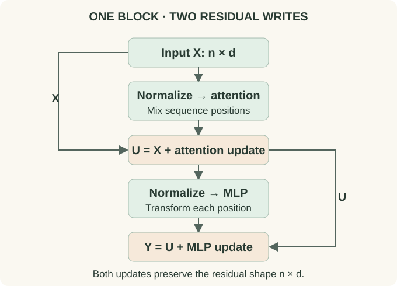

A Transformer Block, Line by Line
State the shape contract
Let the input be $X\in\mathbb R^{B\times n\times d}$. One block returns the same shape. This does not mean the representation is unchanged: every coordinate may be updated. It means the next block can use the same interface without tracking a growing concatenation of previous activations.
Use a pre-norm block with two separate normalization modules $N_1,N_2$:
The second sublayer sees the result after the attention update. Evaluating both branches from the original $X$ instead implements a parallel-branch block, an architectural variation that needs its own definition. A final normalization after the full stack is common in pre-norm language models.

{kind=link}
Trace an example without hiding a transpose
Choose $B=2$, $n=5$, $d=12$, and $H=3$ heads of dimension $d_h=4$. Normalization preserves $[2,5,12]$. Each Q/K/V projection produces $[2,5,12]$, then reshaping and transposing yields $[2,3,5,4]$. Scores are $[2,3,5,5]$ and head outputs are $[2,3,5,4]$.
Transpose back to $[2,5,3,4]$ before merging the last two axes to $[2,5,12]$. An output projection writes into residual coordinates. Add $X$, then normalize the result. A conventional MLP with width $48$ expands to $[2,5,48]$ and projects back to $[2,5,12]$ before the second residual addition.
A reshape changes how dimensions are grouped; it does not perform the permutation of token and head axes. In tensor libraries that track strides, the transpose may create a noncontiguous view, so an appropriate reshape or contiguous conversion is needed before flattening.
Why keep an explicit residual path?
At initialization, a sublayer can learn a useful update without having to reconstruct every input feature from scratch. If the sublayer output is zero, the residual stream passes through unchanged. Its derivative includes an identity contribution, as derived in the normalization chapter.
Residual addition does not isolate “old knowledge” in some coordinates and “new knowledge” in others. They are summed in the same vector space. Subsequent projections decide which combinations matter. Deep stacks can accumulate a large residual magnitude, so branch scaling and initialization are part of the training design rather than cosmetic details.
Every residual addition requires matching shapes. Expansion inside a head or MLP must be projected back to width d. Enable JavaScript to change the example inputs; the complete calculation remains in the article.
Count one conventional block
Ignoring biases, full multi-head attention with total query/key/value width $d$ has four $d\times d$ matrices: Q, K, V, and output. Its parameter count is $4d^2$. A two-matrix MLP of width $4d$ contributes $8d^2$. Two LayerNorms contribute $4d$ scale-and-shift parameters. That gives approximately $12d^2$, plus small affine terms.
For $d=768$, $12d^2=7,077,888$ matrix parameters per block. This is not a universal transformer formula: GQA changes K/V projections, a gated MLP changes matrix count, MoE changes the active/total distinction, and a cross-attention sublayer adds another attention module. The embedding table and vocabulary head are outside this block count.
A forward pass with explicit responsibilities
def block(x, allowed, norm1, attention, norm2, mlp, dropout):
attn_update = attention(norm1(x), allowed)
x = x + dropout(attn_update)
mlp_update = mlp(norm2(x))
x = x + dropout(mlp_update)
return xDropout here acts on branch outputs. Attention-probability dropout, if used, is inside the attention module and is a separate operation. In evaluation mode, conventional dropout becomes the identity. A cached decoder's attention module also accepts and returns its layer's K/V state; the MLP has no growing token cache.
The whole block must respect the information boundary
A lower-triangular attention mask is necessary for a conventional causal self-attention layer, but it is not sufficient if some other operation mixes future tokens into the representation. Normalization over the sequence axis, a noncausal convolution, or incorrectly packed examples can all break causality.
A useful test changes only future input tokens and verifies that earlier output logits remain unchanged in evaluation mode. Another compares the full-sequence forward pass with token-by-token cached execution. These test the function's information dependencies, not whether its variable names contain “causal.” The numerical lab includes such equivalence checks.
What changes between model families?
An encoder uses bidirectional self-attention over its available input. A decoder-only language model uses causal self-attention. The decoder of an encoder–decoder model additionally cross-attends to source representations. “Decoder” does not always imply a cross-attention sublayer: context from the surrounding architecture resolves that ambiguity.
Modern recurrent hybrids replace selected token-mixing modules while keeping a residual stream and an MLP-like channel mixer. Hybrid attention therefore builds on this block decomposition; it does not require treating every newer architecture as an unrelated diagram.
Try it: If you double the number of heads while keeping $d$ fixed in ordinary MHA, do you double the four projection matrices?
No. Each head becomes narrower and the total projected width remains $d$. The projection parameter count stays $4d^2$ under the stated convention. Kernel efficiency and representational behavior can still change.
Choose the next layer of detail
Use the architecture guide to assemble an encoder, decoder, or encoder–decoder model. For the layer itself, the original Transformer paper specifies the classic post-norm design; the pre-norm equations here explicitly describe a different placement.